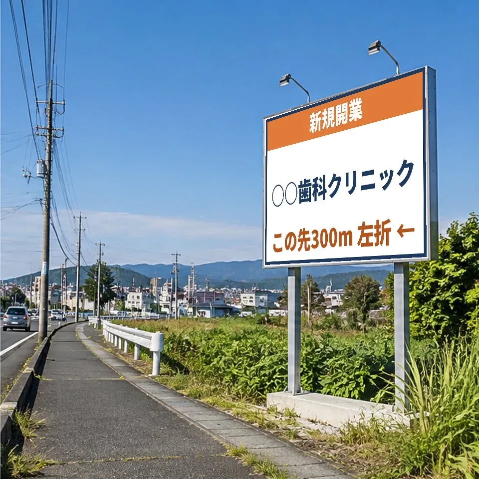
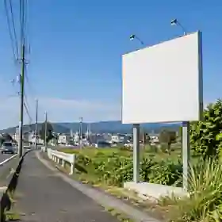

空き看板の外部営業パートナー
空いている看板に、
次の広告主を。
滋賀・京都のクリニックや店舗から届く広告相談と、
御社の空き媒体をつなぎます。
- 1写真と所在地で登録
- 2合う相談をメールで通知
- 3見積・契約・請求は御社で
登録無料。成約したときだけ紹介手数料。
※手数料の条件は試行前に書面で合意。どの看板を勧めるかは手数料で変えません。


1面ごとに、広告主候補をこう探します。
最初の面談で、空き面1つ分を無料で作ってお持ちします。
すべて架空の条件です
1 この看板が見られる道
- 見る人
- 南草津駅方面へ向かう車（朝夕の通勤）
- 周辺
- 1km先に住宅地、手前300mに交差点
- 月額
- 25,000円（仮定）
2 合う業種（優先順）
- 開院予定の歯科・内科看板の先2km以内に開院する医院
- 学習塾・習い事住宅地の子育て世帯に届く
- 住宅・リフォーム分譲地や見学会への案内
3 候補の探し方
- 開院予定の医院の公開情報（求人・内覧会の告知）
- 近くの新規出店・移転のお知らせ
- 同じ道路沿いで、まだ看板を出していない店舗
4 提案の順番
紹介する前に、社名を御社にお知らせします。既存のお客様は対象外です。
事業者の課題に合わせる
空き枠を埋めるための営業、
後回しになっていませんか。
施工・管理で手が足りない
広告主探しを外に任せる
場所に合う業種を探したい
道路と周辺から業種を絞る
空きの期間が長くなる
問い合わせ待ち以外の販路を
数字でわかる提携メリット
空き枠1面が埋まったら、
どれだけの広告料になるか。
単価と期間を動かして試算できます。
※満額入金を前提とした概算。紹介料・賃料・施工費・税は含まず、利益額ではありません。
役割分担
施工と契約は御社。
広告主開拓は当社が支援。
- 媒体に合う業種の調査
- 新規候補の抽出・比較提案書
- 紹介記録・更新時期の管理
- 御社と直接契約
- 当社への支払いはなし
- 空き・掲載料の最終確認
- 設計・施工・点検・請求
- 屋外広告物の許可
許可申請は申請者本人か行政書士が行います。
既存のお客様・商談中の企業は除外。紹介前に社名を確認します。
登録したあと、何が起きるか。
費用は、成約したときの紹介料だけ。
媒体を登録
所在地と空き状況だけ
条件を確認
条件と除外先を書面で
広告主を探す
合う事業者に個別提案
成約
御社と広告主が直接契約

運営会社について
地域の経営支援経験を、広告の場所選びに。
BRIDGE CYCLE株式会社。代表 中村裕二は商工会の経営指導員として約20年、事業者の創業・承継を支援。
よくあるご質問
提携前に確認したいこと
広告主と直接契約できますか？
はい。掲載契約と広告料の請求は原則として御社が直接行い、当社は紹介だけです。
既存の代理店契約と重複しませんか？
既存顧客や商談中の企業は事前照合の上で除外します。独占契約は求めません。
紹介料は更新後も必要ですか？
更新・追加出稿の扱いは試行前に書面で合意します。無期限には求めません。
当社が新しく見つけた壁面や用地の場合は？
条件を既存の看板とは別にご相談します。所有者・広告主からはいただきません。
屋外広告物の許可申請は誰が行いますか？
申請者ご本人か行政書士などが行います。当社は申請書の作成や代理はしません。
京都市内の看板でも対象ですか？
対象です。掲出条件は媒体側で確認が必要です。
登録すると、
こんなお知らせが届きます。
- 希望エリア
- 大津市 瀬田・石山周辺
- 業種
- 歯科医院（開院予定）
- 媒体
- 野立て看板・電柱広告
- 予算
- 月3万円前後
- 時期
- 開院の2か月前から
合う媒体をお持ちなら、このメールに返信してください。広告主へは、御社の承諾を得てからご案内します。
お知らせは、配信を希望した会社にだけ送ります。いまは担当者が条件を確認してから、1件ずつお送りしています。
空き媒体の登録（無料）
空いている面を、1面から登録できます。
無料。合う広告主に優先して提案します。
看板会社・媒体を持つ会社の方
4項目・1分で、
登録できます。
写真・料金・空き状況は、あとから追加できます。承諾なしに公開しません。
複数面ある場合は、一覧表をメールでお送りいただいても構いません。